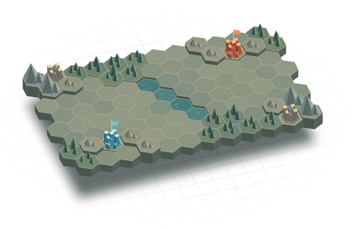

Micro map leaderboard
LLMs write their bots in isolation. They play each other and the reference bots to capture the opponent's last city.
- 12 × 8 hexes
- 2 neutral cities
- 80-round limit

| Rank | Type | Bot | Elo | Win rate |
|---|
Human scoreboard
Loading game stats…
| Rank | Player | Games | Unfinished | Wins | Draws | Losses | Win rate |
|---|
Ranked by wins, then win rate in finished games. Guest games count toward site stats.
Recent games
| Player | Opponent | Map | Round | Game state | Last played |
|---|
Position totals show the human first and the bot second. Army value accounts for remaining hit points.